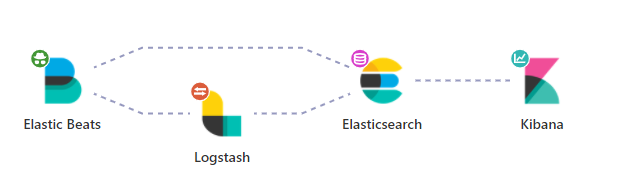
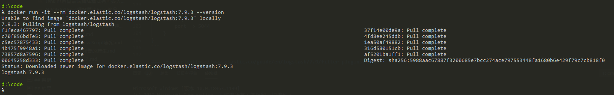
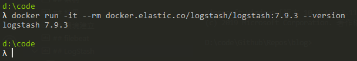
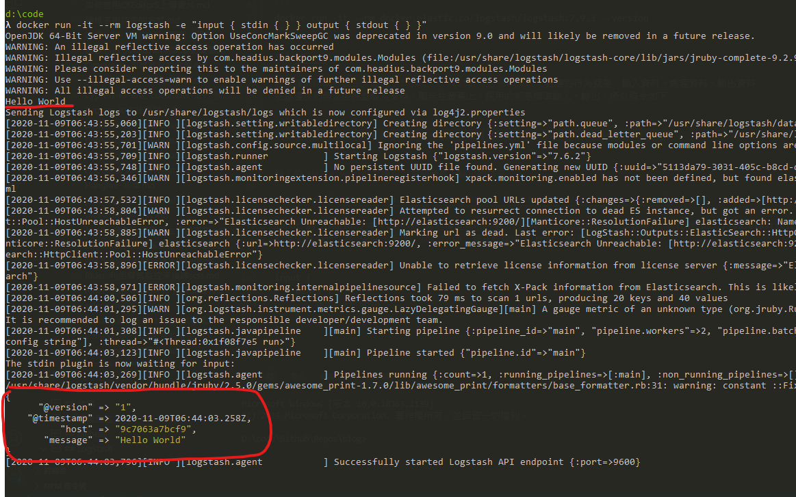
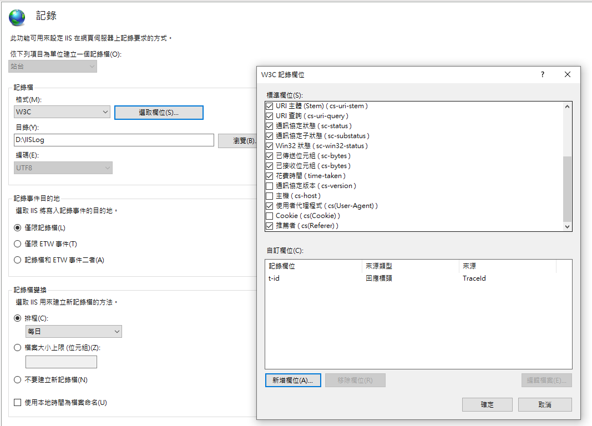
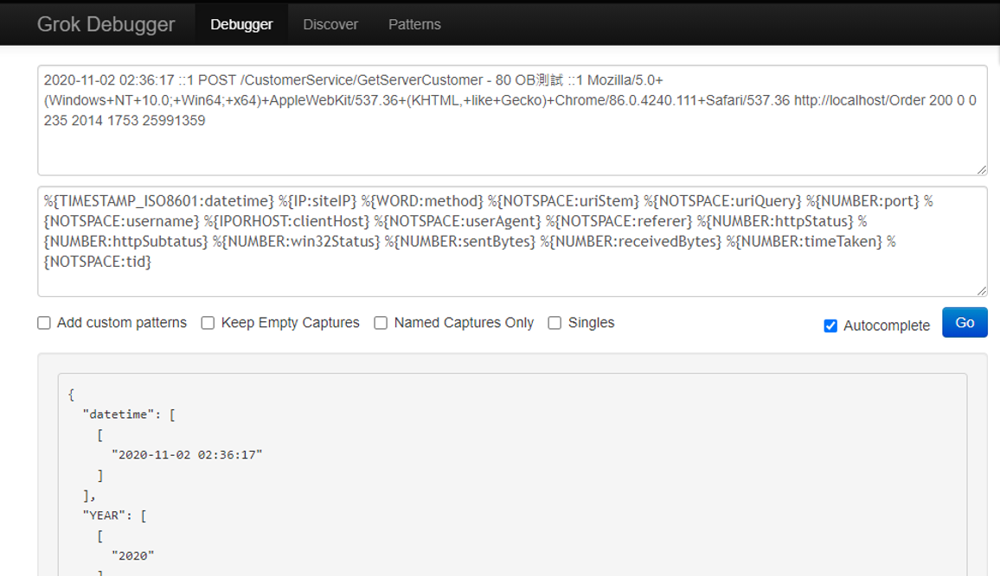
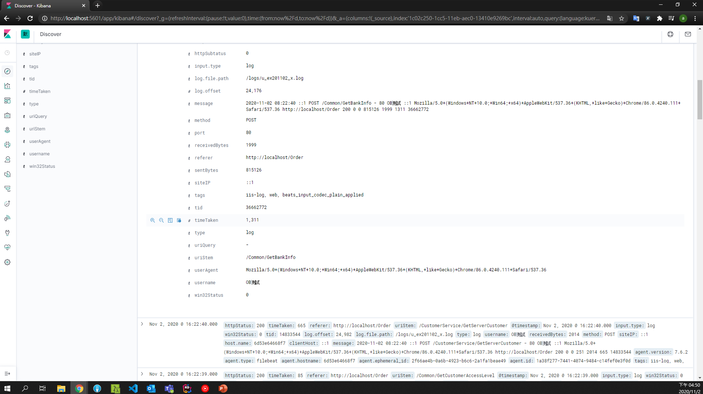

本次練習如何透過filebeat採集主機資訊，並傳遞給logstash進行分析過濾後，由kibana的介面去查看資料；另外一個用法是直接讓filebeat的資料丟給elasticSearch，並且最終在kibana的Logs功能裡面查看，不過我沒有使用就不介紹了
架構

環境建立
基本上就是透過 docker 建立所需要的東西，這部分請參考我自己練習的docker-compose，當然我也是改自deviantony/docker-elk的Elastic stack (ELK) on Docker，有興趣的人可以了解一下
filebeat
依照下列的設定表示要監控該目錄下的 log 檔案，本次練習要監控的目標檔案是由 IIS 產生的網站 log 資料，但因為預計是用 docker 建立，所以我們在此處只需要指定某個路徑，屆時要建立 container 的時候，再透過 volume 來掛載實際路徑即可
1 | filebeat.inputs: |
而標籤這個屬性則可以讓後續處理的 Logstash 知道應該用怎樣的規則解析資料用的
- 標記 iis-log 是為了讓 logstash 可以我們自訂的 iis-log 解析方式來切割我們所需要的欄位
- 標記 web 是為了在 logstash 輸出的時候，可以分類在不同的 index，這樣在 kibana 可以透過切換索引的方式來查詢不同的資料
1 | tags: ['iis-log', 'web'] |
這邊範例使用 docker 架設，所以寫的也是 docker-compose 裡面對應的名稱，但實務上通常會是另外一台
因為filebeat所占用的資源通常很少，對於系統可忽略不計，而logstash會占用較多資源，所以實務上通常都是用filebeat收集資料，由logstash分析處理再轉發給elasticSearch儲存
1 | output.logstash: |
所以完整的filebeat設定檔如下
1 | filebeat.inputs: |
LogStash
Hello World
不免俗地從Hello World開始，為了示範方便，採用Docker安裝Logstash來進行測試
先下載 logstash docker image
1 | docker pull docker.elastic.co/logstash/logstash:7.9.3 |

嘗試一下看看版本
1 | docker run -it --rm docker.elastic.co/logstash/logstash:7.9.3 --version |

設定檔的結構分成三大區塊 input、filter、output，對應的行為就是：輸入資料、處理資料、輸出資料
在這邊我們希望由鍵盤輸入資料，顯示在螢幕上，採用的都是標準輸入、輸出，所以指令如下
1 | docker run -it --rm logstash -e "input { stdin { } } output { stdout { } }" |
輸入的Hello World之後可以看到螢幕上輸出的結果

設定語法
區段
用大括號來定義，裡面可以包含logstash外掛設定，例如
1 | input { |
表示藉由 input 外掛stdin作為 logstash 的輸入
資料型態
| type | sample |
|---|---|
| bool | debug => true |
| string | host => “hostname” |
| number | port => 8080 |
| array | match => [“datetime”,”UNIX”,”ISO8601”] |
| hash | options => { key1 => “value1”, key2 => “value2” } |
引用欄位
例如資料來源有一個是 tags，要引用他就加上中括號 [tags]
條件判斷
| type | sample |
|---|---|
| equality | ==,!=,<,>,<=,>= |
| regexp | =~,!~ |
| inclusion | in, not in |
| boolean | and,or,nand,xor |
| unary | !() |
參考資料來源取自
ELK 權威指南第二版 -- ISBN:978-7-111-56329-7
input
input 的 plugin 之中，因為我們當前情境要用的是filebeat，相關的文件可以參考此處，在這邊因為 filebeat 送資料進來的 port 是 5044，所以 logstash 需要監聽這個 port，設定如下
1 | input { |
codec
logstash 在處理資料的部分，其實不只是 input | filter | output，應該是 input | decode | filter | encode | output，而codec就是在處理decode、encode的部分
不過因為我目前實務上並沒有需求使用到這些東西，所以先暫時知道有這麼一回事情就好，細節的部份可以看一下官方介紹，了解一下支援的編碼格式
filter
照字面上的翻譯是過濾，但其實可以想像成切割，因為這階段做的事情就是將輸入資料透過我們設定好的方式，從原始資料中切割出我們所需要的資料格式，然後交給下一個階段輸出
IISLOG 原始的資料格式如下，一行就是一筆資料，以空格分開，對應的欄位順序如同#Fields一樣
新增的自訂欄位設定如下

1 | #Software: Microsoft Internet Information Services 10.0 |
由於將 filebeat 設定標籤為iis-log、web，所以在 filter 這邊就可以透過下列的判斷式處理
1 | filter { |
注意，網站 IIS log 若沒有特別處理，通常都是用 W3C 的格式，而這個格式的時間是格林威治時間，所以在
logstash為了要讓他在kibana裡面的時間是我們 UTC+8 的時間，所以利用date這個外掛指定timezone
在filter這個部分會常用到的是grok表達語法，格式是%{屬性:自訂切割後屬性名稱}，可以透過grokdebug這個線上工具驗證語法，以上面的設定為例子，就是透過 IIS LOG 的訊息，撰寫對應的 grok 語法去切割我們所需要的資料，有興趣的人可以去網站試試看

output
輸出的部分就較簡單，確認是web的話就塞到web-iis-log-XXXX.XX.XX的 index 去，順便也用標準輸出 stdout，如果有問題還可以去 container 裡面看，如果不需要當然也可以移除 stdout這行
1 | output { |
結果
elastic 跟 kibana 的部分就參考 github 內容，這邊比較沒什麼需要說明的，直接看結果

可以看到我們經由logstash切割出來的欄位都已經能夠在kibana中出現，例如tid，username等等，這樣就可以利用來搜尋了